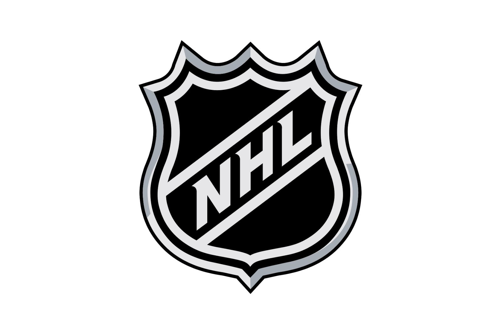
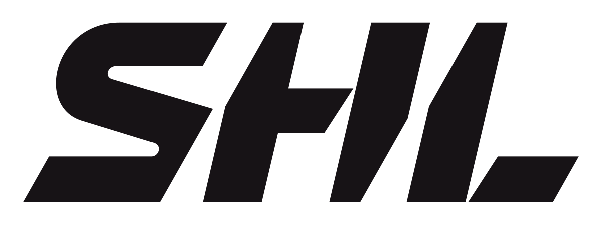

Hockey Fantaster
NHL
National Hockey League (NHL), är den högsta ligan i det nordamerikanska ishockeysystemet och kvalitetsmässigt världens högst rankade. Det lag som har varit mest framgångsrikt är Montreal Canadiens med totalt 24 Stanley Cup-titlar, varav 23 sedan NHL bildades. Regerande mästare är St. Louis Blues. NHL grundades 1917 i kanadensiska Montréal, Québec, efter att företrädaren National Hockey Association (NHA) hade ställts in. Då innehöll NHL bara fyra medlemsklubbar men har sedan dess utökats via ett flertal expansioner till de 31 lag som spelar i ligan från och med säsongen 2017/2018. Sju av klubbarna kommer från Kanada medan de resterande 24 är ifrån USA. Lagen spelar 82 matcher i grundserien mellan oktober och april för att avgöra vilka 16 klubbar (åtta från Eastern Conference och åtta från Western Conference) som spelar slutspel mellan april och juni och har chansen till att vinna Stanley Cup-pokalen. Ligan är stängd från nedflyttning och därav har medlemsklubbarna samarbetsavtal med de klubbar som spelar i American Hockey League och ECHL för att utveckla sig inom den nordamerikanska ishockeyn. De klubbar som hamnar sist i grundserien får sedan fördelar vid den årliga draften om vem som får välja först i NHL Entry Draft och på så sätt jämnas lagens styrka ut med tiden.
SHL
Svenska hockeyligan, officiellt SHL (tidigare Elitserien i ishockey), är den högsta nivån i ishockeyns seriespel för herrar i Sverige. Ligan har spelats sedan säsongen 1975/1976. Inför säsongen 2013/2014 bytte ligan namn till SHL (Svenska hockeyligan). Series som består av 14 lag spelar 52 matcher vardera innan de sex främst placerade lagen är direktkvalifierade till SM-kvartsfinal. Lag sju möter sedan lag tio medan lag åtta möter lag nio i åttondelsfinaler i bäst av tre matcher. Lag elva och tolv har spelat färdigt för säsongen medan lag tretton och fjorton får spela direktkval till SHL mot två lag från HockeyAllsvenskan. I SM-slutspelet spelas kvartsfinal, semifinal och final i bäst av sju matcher. Det lag som vinner SM-finalen tituleras svensk mästare och tilldelas LeMat-pokalen. Räknar man med alla åren sedan första svenska mästerskapet spelades 1922 har Djurgårdens IF flest SM-tecken, före Brynäs IF, Färjestad BK och IK Göta. Färjestad BK är det lag som leder SHL:s maratontabell och innehar flest SM-titlar sedan säsongen 1975/1976, följt av Djurgårdens IF och Frölunda HC.
Övriga ligor
KHL
Kontinentala hockeyligan, är en ishockeyliga, bildad 2008 i Eurasien. I Ryssland ersatte KHL den tidigare ryska superligan. KHL-säsonger avslutas med slutspelet om Gagarin Cup (Kubok Gagarina). Trofén är döpt efter kosmonauten Jurij Gagarin, den första människan i rymden. Den sjunde och avgörande matchen i finalspelet var för 2009 planerad till den 12 april, årsdagen för Gagarins rymdresa 1961. KHL åtnjuter politiskt stöd och finansieras av delstatliga energijätten Gazprom i Ryssland. Tanken är att skapa en resursstark, multinationell ishockeyliga för att konkurrera med nordamerikanska NHL om de bästa spelarna.
Liiga
Liiga, även känt som FM-ligan, är en professionell ishockeyserie, hade premiär säsongen 1975/1976 då den ersatte FM-serien i ishockey, som i huvudsak var en amatörserie. De första säsongerna var FM-ligan halvprofessionell. Ytterst få spelare i Finland under 1970-talet hade som heltidsjobb att spela ishockey. De första elva säsongerna kom omkring 900 000 åskådare per säsong och tittade på grundseriematcherna. Säsongen 1986/1987 utökades antalet matcher i grundserien för varje lag från 36 till 44, och säsongen 2000/2001 till 56. Serien utökades till 12 lag säsongen 1988/1989. Under 1990-talet ökade intresset för ishockey i Finland, bland annat genom framgångar för Finlands herrlandslag i ishockey. FM-ligans åskådarantal per säsong ökade till omkring 1,8 miljoner.
Extraliga
Extraliga heter den högsta divisionen inom ishockey i Tjeckien. Namnet på serien ändras ibland beroende på sponsor. Säsongen 2006/2007 var namnet O2 Extraliga. Tidigare har den även haft namnen Tipsport Extraliga, Český Telecom Extraliga samt Staropramen Extraliga. Serien startade 1993 då staten Tjeckoslovakien upplöstes. 14 lag spelar i ligan, och de tio bäst placerade lagen kvalificerar sig i slutet av säsongen till slutspelet där den nationella mästaren koras. De sex bästa lagen kvalificerar sig direkt till kvartsfinalen som avgörs i formatet bäst av sju matcher (vilket även semifinal och final gör).